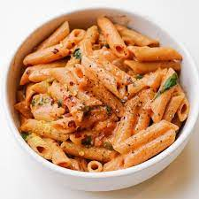

Gigi Hadid's Pasta

Decription
This pasta created by the model Gigi Hadid has been a classic at
my house. I have made this countless amounts of times, because it
is so easy and even more tasty!
Every chef can make this as spicey as they want, or as cheesy as they
want. So make sure to put your own twist in the ammounts of Indgredients
Ingredients
- Favorite Pasta (Penne Pasta used in image)
- Olive Oil
- Onion
- Garlic cloves
- Tomato paste
- Heavy Cream
- Pasta Water
- Butter
- Parmesan cheese
- Salt and pepper to taste
- Basil
Instructions
- Boil your pasta according to the package instructions. In a
large skillet on medium high heat add the olive oil and cubed
onions. Sauté’ the onions for a few minutes until translucent
then add in the minced garlic and sauté’ for another 1-2
minutes.
- Add in the tomato paste, heavy cream, butter, pasta water,
(some add vodka), crushed red pepper (optional) parmesan cheese,
salt and pepper and mix until combined.
- Add in your drained pasta and mix in with the sauce. Garnish with
fresh basil and enjoy!